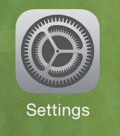
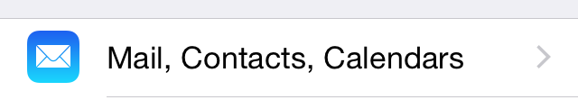
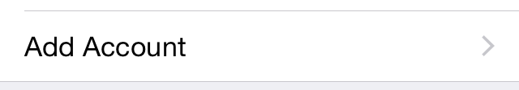
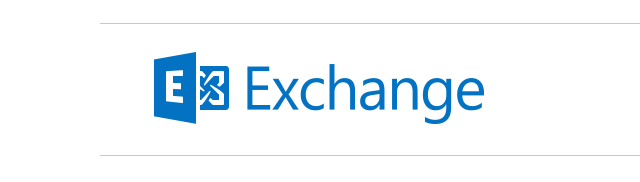
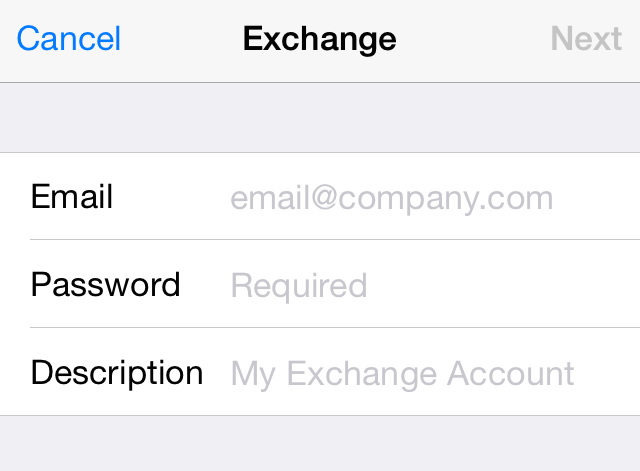
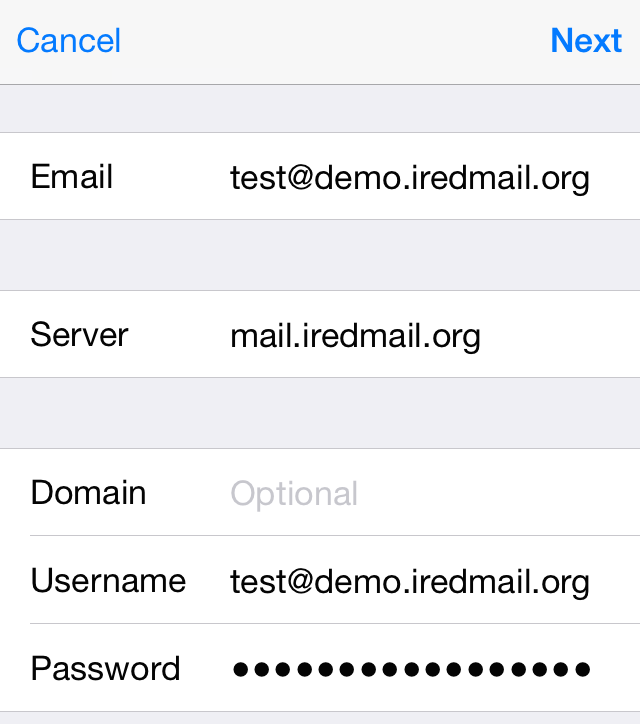
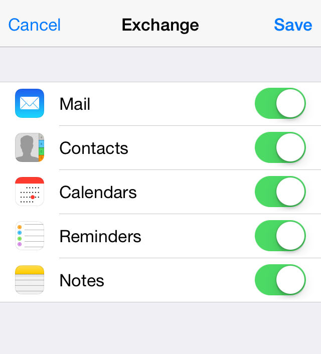

Important Notes
iRedMail doesn't integrate OpenChange and Samba4 for native MAPI support.
1: Open application Settings on home screen:

2: Click Mails , Contacts, Calendars:

3: Click Add Account:

4: Choose Exchange.

5: Fill up the form with your server address and email account credential
your full email addresspassword of your email accountyou can type anything here
6: If it cannot auto discover server settings, you should fill up the form with server address and username.
your server name or IP addressyour full email address
7: Choose items you want to sync to this mobile device:

That's all.